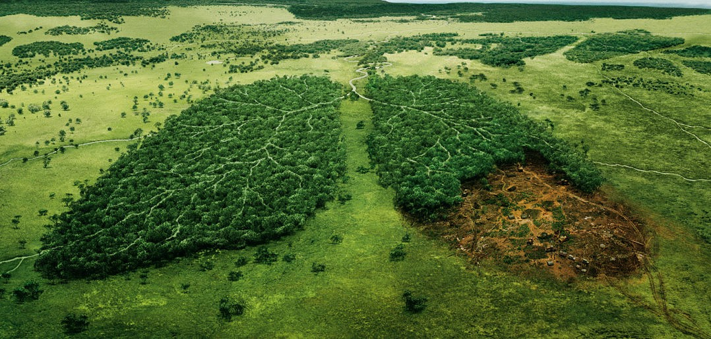

Adorable , isn't it?
but sadly not for long
only
1084 pandas
are left across the world scattered
only
400 sunda tigers
are left across the world
only
111,000 elephants
are left across the world
only
1000 pig-tailed langurs
are left across the world

only
10,000 vultures
are left across the world

& the list goes on.... but why??
Deforestation
Cutting down forest.. it definitely harms wild life adversly. As some are stated above there are
a lot of other creatures that are going extinct (like rhinos, saola, gorilla, amur leopard etc). In addition to
that there are
several other problems which deforestation causes on human life, like:
- ↳ Climate change & imbalance
- ↳ Increase in global warming
- ↳ Increse in green house emission
- ↳ Soil errosion
- ↳ Floods
- ↳ Acidic oceans
- ↳ Decline in life quality of people etc etc etc
Guess forests really are lungs of our land

So if we want to help these poor creatures & ourself, we have to avoid deforestation
"but how do we do" that you ask?. Well here are some solutions that can help:
- ※ (First & Formost) effective government regulation, like:
- ↳ baning clear-cutting forest
- ↳ reforestation & afforestation etc
- ※ here's how you can help:
- ↳ plant a tree
- ↳ recycle paper & cardboard
- ↳ buy only sustainable wood products
- ↳ not burning firewood wxcessively
- ↳ don't use products that cause deforestation
- ↳ educating other etc.. are some of them
Then soon we can go from this :

To this :